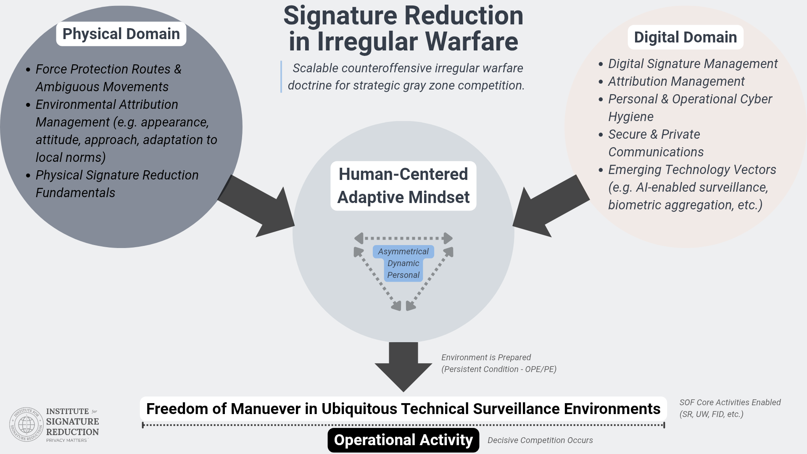
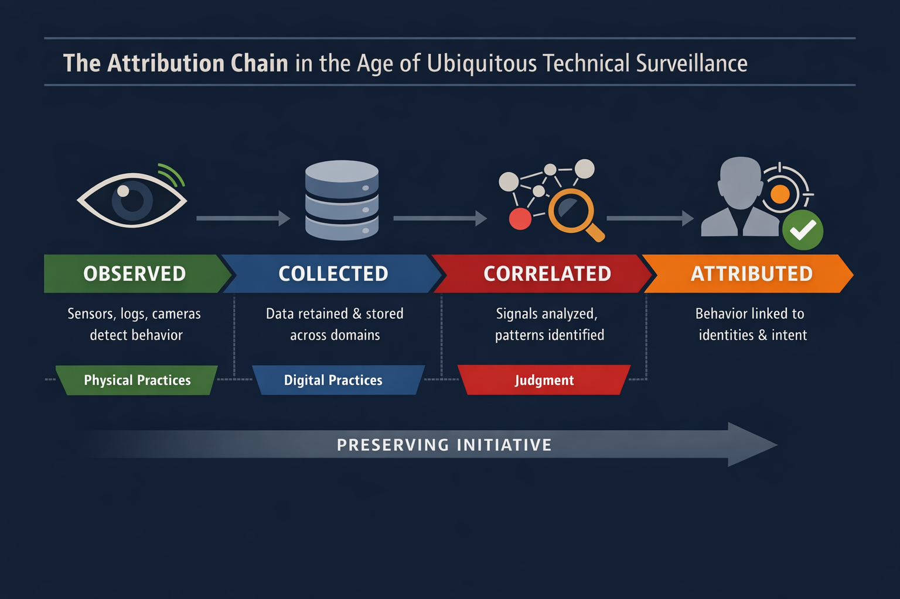
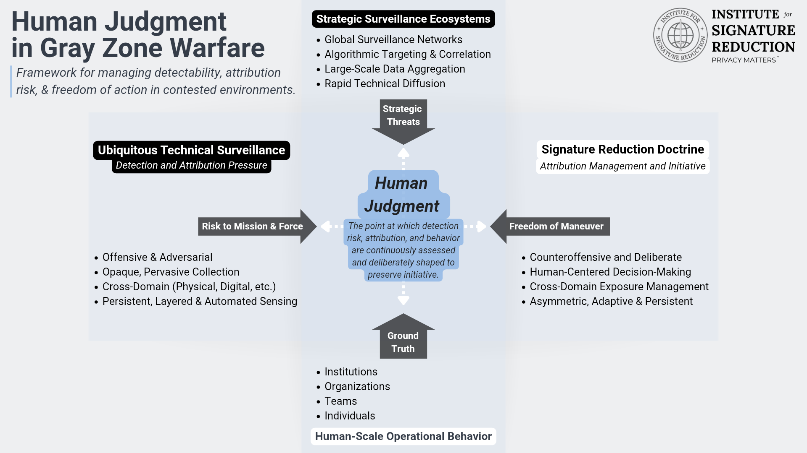

Privacy Matters
Routine behavior increasingly generates observable signals captured by financial systems, cameras, digital networks, and data platforms. These signals accumulate across domains and may be correlated to reveal identity, relationships, and intent.
ISR research examines this environment through a coherent doctrinal framework linking the strategic condition of ubiquitous technical surveillance to the operational problem of attribution pressure and the countervailing doctrine of signature reduction.
Signature Reduction Doctrine
Signature Reduction Doctrine provides a systematic approach to preserving operational freedom of manuever by managing observability across all domains. Rather than attempting to eliminate surveillance, it focuses on disrupting correlation, managing aggregation, and shaping the patterns that enable attribution.
Core Principles
- Operational Awareness: Maintain situational and behavioral awareness to recognize when actions generate observable signatures.
- Digital Force Protection: Reduce digital exposure through intentional individual and organizational technology use.
- Behavioral Discipline: Manage patterns in physical movements, routines, and interactions to shape observable signatures.
- Integrated Tradecraft: Apply human judgment in concert with technical protocols across domains to reduce exposure.
Applications & Examples
Signature reduction is applied across domains:
- Digital: Secure communications, compartmentalized online activity, and encrypted and open source means.
- Physical: Movement discipline, environmental attribution considerations, and managing observable cues.
- Financial & Administrative: Privacy first infrastructure, personal and professional minimization.
Case Example: An operator may use force protection routes, encrypted messaging, and managed digital footprints to perform physical reconnaissance while minimizing observable patterns, enabling prolonged manuever in a gray zone environment.

Ubiquitous Technical Surveillance
UTS describes an environment characterized by persistent sensing across online, electronic, visual-physical, financial, and travel systems enabled by networked sensors and large-scale data aggregation.
Under these conditions, ordinary actions generate observable signatures that may be collected and aggregated across platforms.
.png)
The Attribution Chain
Operational exposure increasingly emerges through correlation rather than isolated detection events. Observable behaviors accumulate within surveillance systems until they can be linked to individuals, organizations, and intent.

Observation, collection, correlation, and attribution form the operational pressure shaping modern irregular warfare environments. Signature reduction directly counters these pressures.
Conceptual Models
Human Judgment in Gray Zone Warfare
Human judgment functions as the decisive mechanism for managing detectability and attribution risk under persistent surveillance.

Doctrine Publications
Ubiquitous Technical Surveillance and the Renewal of Irregular Warfare
Executive takeaway: Ubiquitous technical surveillance signifies a shift in warfare dynamics, challenging traditional assumptions while emphasizing human judgment in irregular conflicts.
View publicationDownload PDF
Counteroffensive Irregular Warfare: A Doctrine of Signature Reduction for Strategic Competition
Executive takeaway: Signature Reduction enables maneuver and survivability under conditions of pervasive surveillance by integrating human behavior, operational tradecraft, and technology use.
View publicationDownload PDF
Affiliations
Applied operational programs derived from ISR doctrine are delivered by the Signature Management Unit (SMU), an independent practitioner-led organization that provides operational instruction and facilitated programs for government partners.
Contact
info@isrprivacymatters.org
The Institute for Signature Reduction maintains a selective engagement posture in support of its mission. Correspondence is reviewed on a periodic basis. Not all inquiries will receive a reply.
ISR is an independent U.S.-based 501(c)(3) nonprofit charitable organization. IRS determination documentation is maintained and available upon request.